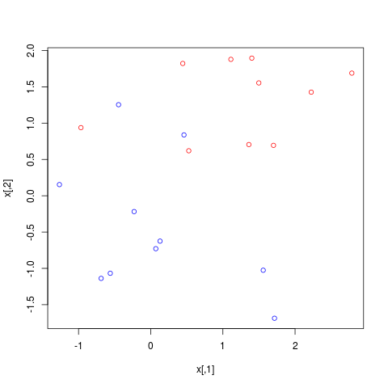
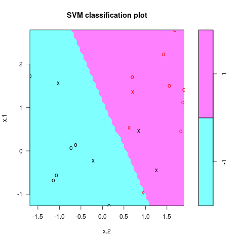
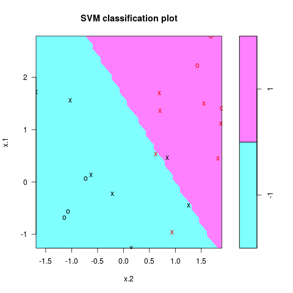
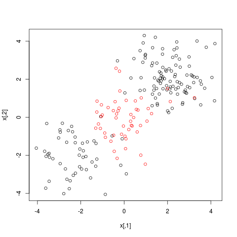
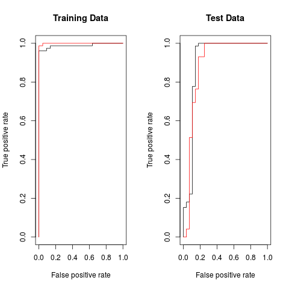
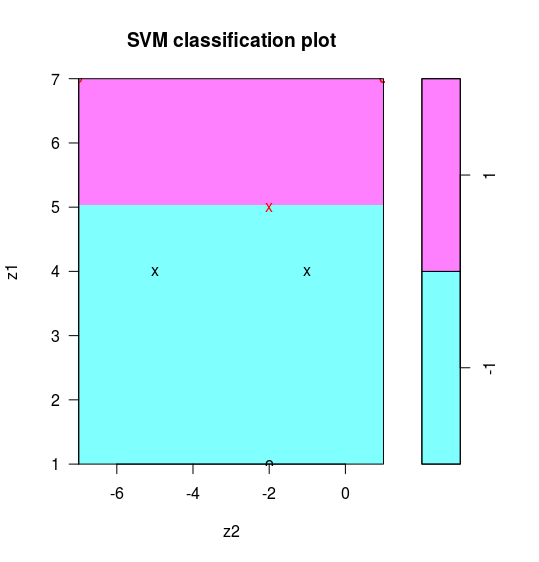
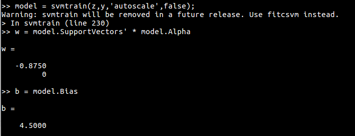

SVM处理线性和非线性类别边界¶
| Stats Blog | Illustrations of Support Vector Machines |
|---|---|
| 作者 | szcf-weiya |
| 发布 | 2018-02-12 |
| 更新 | 2018-03-19 |
通过两个例子，介绍如何使用e1071包SVM进行分类，主要参考ISLR1。
线性类别边界¶
生成数据¶
```r
generate data¶
set.seed(123) x = matrix(rnorm(20*2), ncol = 2) y = c(rep(-1, 10), rep(1, 10)) x[y==1, ] = x[y==1, ] + 1 png(“ex1.png”) plot(x, col = (3-y)) dev.off() ```

拟合¶
应用支持向量分类器
r
dat = data.frame(x = x, y = as.factor(y))
svmfit = svm(y~., data = dat, kernel = "linear", cost = 10, scale = FALSE)
png("ex1_svm.png")
plot(svmfit, dat)
dev.off()
分类结果如图所示

注意到参数cost越大，margin越窄，当变小cost时，支持向量的个数也会增多
Tip
svmfit$index返回支持向量的序号。
```r
a smaller cost¶
svmfit = svm(y~., data = dat, kernel = “linear”, cost = 0.1, scale = FALSE) png(“ex1_svm_smaller.png”) plot(svmfit, dat) dev.off() ```

交叉验证¶
当然也可以通过交叉验证选择最优的cost
```r
cross-validation¶
set.seed(123) tune.out = tune(svm, y~., data = dat, kernel=”linear”, ranges = list(cost=c(0.001, 0.01, 0.1, 1, 5, 10, 100))) summary(tune.out)
pick up the best model¶
bestmod = tune.out$best.model summary(bestmod) ```
输出结果如下：
```r
Call:¶
best.tune(method = svm, train.x = y ~ ., data = dat, ranges = list(cost = c(0.001,¶
0.01, 0.1, 1, 5, 10, 100)), kernel = “linear”)¶
¶
¶
Parameters:¶
SVM-Type: C-classification¶
SVM-Kernel: linear¶
cost: 1¶
gamma: 0.5¶
¶
Number of Support Vectors: 8¶
¶
( 4 4 )¶
¶
¶
Number of Classes: 2¶
¶
Levels:¶
-1 1¶
```
预测¶
应用通过交叉验证选择出的最优模型进行预测
```r
prediction¶
xtest = matrix(rnorm(20*2), ncol = 2) ytest = sample(c(-1, 1), 20, rep = TRUE) xtest[ytest == 1, ] = xtest[ytest == 1, ] + 1 testdat = data.frame(x = xtest, y = as.factor(ytest)) ypred = predict(bestmod, testdat) table(predict = ypred, truth = testdat$y) ```
预测结果为 ```r
truth¶
predict -1 1¶
-1 8 2¶
1 1 9¶
```
非线性类别边界¶
生成数据¶
r
set.seed(123)
x = matrix(rnorm(200*2), ncol = 2)
x[1:100, ] = x[1:100, ] + 2
x[101:150, ] = x[101:150, ] - 2
y = c(rep(1, 150), rep(2, 50))
dat = data.frame(x = x, y = as.factor(y))
png("ex2.png")
plot(x, col = y)
dev.off()

训练¶
```r
randomly split into training and testing groups¶
train = sample(200, 100)
training data using radial kernel¶
svmfit = svm(y~., data = dat[train, ], kernel = “radial”, cost = 1) png(“ex2_svm.png”) plot(svmfit, dat[train, ]) dev.off() ```

交叉验证¶
采用交叉验证选择最优的模型，注意radial核有两个调整参数，gamma和cost。
```r
cross-validation¶
set.seed(123) tune.out = tune(svm, y~., data = dat[train, ], kernel = “radial”, ranges = list(cost = c(0.1, 1, 10, 100, 1000), gamma = c(0.5, 1, 2, 3, 4))) summary(tune.out) ```
结果如下
```r
Parameter tuning of ‘svm’:¶
¶
- sampling method: 10-fold cross validation¶
¶
- best parameters:¶
cost gamma¶
10 3¶
¶
- best performance: 0.08¶
¶
- Detailed performance results:¶
cost gamma error dispersion¶
1 1e-01 0.5 0.22 0.10327956¶
2 1e+00 0.5 0.11 0.08755950¶
3 1e+01 0.5 0.09 0.05676462¶
4 1e+02 0.5 0.11 0.08755950¶
5 1e+03 0.5 0.10 0.08164966¶
6 1e-01 1.0 0.22 0.10327956¶
7 1e+00 1.0 0.11 0.08755950¶
8 1e+01 1.0 0.10 0.08164966¶
9 1e+02 1.0 0.09 0.07378648¶
10 1e+03 1.0 0.13 0.08232726¶
11 1e-01 2.0 0.22 0.10327956¶
12 1e+00 2.0 0.12 0.09189366¶
13 1e+01 2.0 0.11 0.07378648¶
14 1e+02 2.0 0.12 0.06324555¶
15 1e+03 2.0 0.16 0.08432740¶
16 1e-01 3.0 0.22 0.10327956¶
17 1e+00 3.0 0.13 0.09486833¶
18 1e+01 3.0 0.08 0.07888106¶
19 1e+02 3.0 0.14 0.06992059¶
20 1e+03 3.0 0.16 0.08432740¶
21 1e-01 4.0 0.22 0.10327956¶
22 1e+00 4.0 0.12 0.09189366¶
23 1e+01 4.0 0.09 0.07378648¶
24 1e+02 4.0 0.13 0.06749486¶
25 1e+03 4.0 0.17 0.11595018¶
```
预测¶
采用上述交叉验证得到的最优模型进行预测
```r
prediction¶
table(true = dat[-train, “y”], pred = predict(tune.out$best.model, newdata = dat[-train, ])) ```
结果为
```r
pred¶
true 1 2¶
1 72 0¶
2 6 22¶
```
ROC曲线¶
采用ROC曲线来衡量分类模型效果。ROCR包可以用来生成ROC曲线。首先自定义rocplot用于绘图
```r
ROC curves¶
library(ROCR) rocplot = function(pred, truth, …) { if (mean(pred[truth==1]) > mean(pred[truth==2])) predob = prediction(pred, truth, label.ordering = c(“2”, “1”)) else predob = prediction(pred, truth, label.ordering = c(“1”, “2”)) perf = performance(predob , “tpr” , “fpr”) plot(perf, …) } ```
weiya注
上述代码值得说明的是prediction函数中的label.ordering参数，具体用法参见help文档，初次调用时也被困惑了一时，详细过程参见R | 技术博客
训练集的ROC曲线
r
svmfit.opt = svm(y~., data = dat[train, ], kernel = "radial",
gamma = 3, cost = 10, decision.values = T)
fitted = attributes(predict(svmfit.opt, dat[train, ], decision.values = T))$decision.values
png("roc.png")
par(mfrow = c(1, 2))
rocplot ( fitted , dat [ train ,"y"] , main ="Training Data")
增大gamma得到更flexible的模型，与最优的模型进行比较
```r
increasing gamma to produce a more flexible fit¶
svmfit.flex = svm(y~. , data = dat [ train ,] , kernel = “radial”, gamma =50 , cost =1 , decision.values = T ) fitted = attributes(predict(svmfit.flex, dat[train ,], decision.values = T ) ) $decision.values rocplot(fitted, dat[train, “y”], add = T, col =”red”) ```
画出这两个模型在测试集上的ROC曲线
```r
on test data¶
fitted = attributes(predict(svmfit.opt, dat[-train, ], decision.values = T ) ) $decision.values rocplot(fitted, dat[-train, “y”] , main = “Test Data”) fitted = attributes(predict(svmfit.flex, dat[-train, ], decision.values = T ) ) $decision.values rocplot(fitted, dat[-train, “y”] , add =T, col =”red”) dev.off() ```

从图中容易看出，在训练数据上，flexible的模型ROC表现更好，而在测试集上最优模型表现最好。
计算边界¶
本节内容是知乎问题MATLAB上libsvm的使用？ - 知乎的回答过程。
虽然问题是问 Matlab，但系统上没装 matlab，而且不同语言中的算法应该是基本一致的。所以先用 R 来研究一下
数据生成代码
r
x = matrix(c(1, 0,
0, 1,
0, -1,
-1, 0,
0, 2,
0, -2,
-2, 0), byrow = T, ncol = 2)
y = c(-1, -1, -1, 1, 1, 1, 1)
phi <- function(x){
return(c(x[2]^2 - 2*x[1] + 3, x[1]^2 - 2*x[2] - 3))
}
z = t(apply(x, 1, phi))
df = data.frame(z, factor(y))
colnames(df) <- c("z1", "z2", "y")
注意要设定 scale = FALSE，当采用默认 cost 时，
```r
cost = 1¶
svmfit = svm(y~., data = df, kernel=”linear”, scale = F,cost=1) w = t(svmfit$coefs) %*% svmfit$SV b = -svmfit$rho w b ```

此时线性边界为 $z_1=5$，不是问题中的最优分离超平面。注意到当 $C\rightarrow\infty$ 时会得到最优超平面，所以我们取个较大的 cost 进行训练，即
```r
cost = 10000¶
svmfit = svm(y~., data = df, kernel=”linear”, scale = F,cost=1000000) w = t(svmfit$coefs) %*% svmfit$SV b = -svmfit$rho w b ```
得到

判别边界为 $-1.999808z_1-6.4\times 10^{-5}z_2+8.998997=0$，近似 $z_1=4.5$。
顺带贴一下 matlab 的结果
